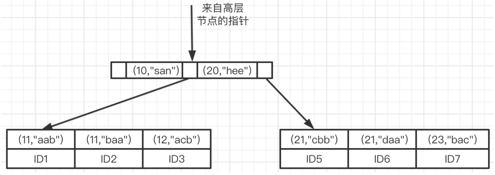

在 MySQL 中，索引是在存储引擎层实现的，所以不同存储引擎即使支持同一类型索引，其实现方式也可能是不同的。
常见类型有：
索引在 MySQL 中页叫做”键(key)”，是存储引擎用于快速找到记录的一种数据结构。
一、索引类型
在 MySQL 中，索引是在存储引擎层实现的，所以不同存储引擎即使支持同一类型索引，其实现方式也可能是不同的。
常见类型有：
- B-Tree 索引
- 哈希索引（hash index）
- 空间数据索引（R-Tree）
- 全文索引
二、索引优点
1.索引减少了服务器需要扫描的数据量
2.索引可以帮助服务器避免排序和临时表
3.索引可以将随机I/O变为顺序I/O
三、如何创建高性能索引（InnoDB）
1.独立的列
索引列不能是表达式的一部分，也不能是函数的参数。
例如，下面则无法使用 user_id 列的索引。
1 | SELECT name FROM user WHERE user_id + 1 = 5; |
究其原因是因为B+Tree 数据结构查找数据是从根节点开始查找，根节点存储了索引的值，所以可以通过二分查找快速定位要需要的行，但是加上了表达式，则 MySQL 不得不一行一行的扫描然后计算判断。
2.前缀索引和索引选择性
有时候我们需要为一个字符串创建索引，这时候可以使用 hash index，但有时候这样还不够，如果字符串非常长，如果整个字符串作为索引则非常占用空间，此时我们需要通过计算索引的选择性来创建前缀索引。
如 name 列里有一个叫 ZhangSan 的名字，如果按照长度5创建前缀索引，那么 MySQL 能索引到的部分就是 Zhang。那一个列我们到底应该创建多长的前缀索引才是最好的了？这时候就要用到索引的选择性这个知识点。
索引的选择性 ：不重复的索引值（也成为基数）和数据表的记录总数(T)的比值。 范围在1/T到1之间。选择性越高查询效率越高。
如何计算了：
a.先计算完整列的索引选择性:
1 | mysql> SELECT COUNT(DISTINCT clsbdh)/COUNT(*) FROM vehicles; |
b.计算不同长度前缀列的索引选择性：
1 | mysql> SELECT COUNT(DISTINCT LEFT(clsbdh,13))/COUNT(*) AS sel13, |
c.从 b 步奏的计算结果中找一个与 a 步奏计算结果最接近的值，这里发现长度为17时符合。这个是非常接近于1，说明该列数据大部分都不重复。
d.创建前缀索引
1 | ALTER TABLE vehicles ADD KEY (clsbdh(17)); |
那如果需要后缀索引该怎么办了？比如要查找 @qq.com 域名的所有电子邮件地址。此时我们可以把字符串反转后存储，然后基于此创建前缀索引 KEY(col(7))，因为反转后moc.qq@长度为7。
3.联合索引
联合索引和多个独立的索引这两者经常被人搞混，我们先来看看这张表：
1 |
|
如上， idx_age 是独立的索引， idx_name_age 是联合索引。为 WHERE 条件里的列都单独创建一个索引其实是不太好，这样没办法优化。
联合索引 key(name,age) 的数据结构B+Tree示例图（参考）

可以看到根节点存储了键值，并且键值先按照 age 升序排列， age列相同时按照 name 排序，同时叶子节点存储了主键的值 ID1 、ID2等。
回表
对于下面的语句，执行过程：
1 | select * from user age = 11 and name = 'aab'; |
首先查找二级索引找到目标列，然后得到主键值为：ID1，此时在通过主键值到主键索引去查找到对应的行，读取对应行的数据。回到主键去查找的过程称为 回表。
使用联合索引要注意 最左前缀原则：
假设现在索引列为 key(age,name,class)：
1 | select * from user where age = 11 and name = 'aab' and class = '三年级一班'; |
以上语句都能使用到索引，因为都是按照联合索引创建顺序来查找的。而下面的语句则用不到索引：
1 | -- 用不到任何索引 |
所以有需要范围查询的列，我们就把索引安排在最后即可。
其实回头查看下联合索引的数据结构思考就能明白，因为索引创建的时候已经是排好序的，第一列相同的情况下，会按照第二列排序，然后是第三列。所以查找的时候只能从第一列开始查找，如果改变顺序，则需要全表扫描。
按照最左匹配原则下面的语句能用到索引吗？
1 | select * from user where name = 'aab' and age = 11 and class = '三年级一班'; |
答案是能用到索引，不信请看执行结果：
1 | mysql> explain select * from user where name = 'aab' and age = 11 and class = '三年级一班'\G; |
这… 不是说要符合最左前缀原则才能使用索引吗？我真的方了。
其实原因在于 MySQL 查询优化器帮我们调整了顺序，实际执行的语句还是如下：
1 | select * from user where age = 11 and name = 'aab' and class = '三年级一班'; |
经过实验结果，只有第一列和第二列会帮我们优化，后面的列还是要自己注意顺序。
索引下推
那对于不符合最左前缀的列是怎么处理的了：
1 | select * from user where age = 11 and class = '三年级一班'; |
在MySQL5.6之后引入的索引下推优化（index condition pushdown)， 可以在索引遍历过程中，对索引中包含的字段先做判断，直接过滤掉不满足条件的记录，减少回表次数。如果条件里面里面不含有索引列，那还是需要回到主键索引去搜索。
4.选择合适的索引列顺序
还是以上面的表为例子，我们可以创建索引 KEY(name,age) 或者 KEY(age,name)。哪种最好了？我们此时可以看哪个列的选择性更高。
1 | mysql> SELECT COUNT(DISTINCT name) / COUNT(*) AS name_selectivity |
age 的选择性更高，应该创建索引 KEY(name,age)。
5.聚簇索引
聚簇索引并不是一种单独的索引类型，而是一种数据存储方式。“聚簇”表示数据行和相邻的键值紧凑地存储在一起。InnoDB 的聚簇索引就是主键。如果表没有定义主键，InnoDB会选择一个唯一的非空索引代替。如果没有这样的索引，InnoDB 会隐式定义一个主键来作为聚簇索引。
我们尽量避免使用随机的（不连续切值得分布范围非常大）聚簇索引。例如使用 UUID 来作为聚簇索引。它会让聚簇索引的插入变得完全随机。同时UUID值非常长，索引占用空间也会变大。
6.覆盖索引
索引包含所有需要查询的字段的值，我们就成为覆盖索引。
假设此时联合索引为：key(age,name,class)：
1 | select * from user where age = 11 and name = 'aab' and class = '三年级一班'; |
按照上面的方式，每查询一次都要回表到主键索引去拿整行数据。如果改成下面这样：
1 | select age,name,class from user where age = 11 and name = 'aab' and class = '三年级一班'; |
此时由于二级索引中存储了索引列的值，所以此时可以直接从索引列获取，避免了对主键索引的二次查询。
覆盖索引对 InnoDB 非常管用，而哈希索引、空间索引、全文索引都不会存储索引列的值，所以没办法使用覆盖索引。
7.使用索引扫描来做排序
如果 EXPLAIN 出来的 type 列的值为“index”，则说明使用了索引扫描来排序。
只有当索引的列顺序和 ORDER BY 子句的顺序完全一致，并且所有列的排序方向（倒序或正序）都一样时，才能使用索引来对结果做排序。如果查询关联了多张表，则只有当 ORDER BY 子句引用的字段全部为第一个表时，才能使用索引做排序。ORDER BY 子句和查询限制一样，都要求满足最左前缀原则。
但有一种情况即使不满足，也可以使用最左前缀排序。索引的第一列被指定为一个常数，此时也可以使用到索引排序。如下：
1 | mysql> explain select age,name,class from user where age = 11 order by name,class\G; |
下面是一些不能使用索引做排序的查询：
使用了两种不同的排序方向
1
... where age = 11 order by name desc,class asc;
ORDER BY 子句中引用了一个不存在索引中的列
1
... where age = 11 order by name,last_name;
WHERE 和 ORDER BY 中的列无法组合成索引得最左前缀
1
... where age = 11 order by class;
索引的第一列上是范围条件，所以后面的列无法使用索引
1
... where age > 11 order by name,class;
name 列上有多个等于条件。对于排序来说，这也是一种范围查询。但是对于where条件的查询则不算范围查询。
1
... where age = 11 and name in ('abc','bcd') order by class;
###四、总结
上面我们讲解了 MySQL 中的索引用法，我们平时在使用的时候要根据业务需要考虑所有列，创建合适的索引和使用合适的 sql 语句。我们要尽可能使用联合索引，并将范围查询的列放到索引靠后的位置，同时要避免多个范围条件的查询。如果能使用覆盖索引则是最好的。
参考资料：
《高性能MySQL》、丁奇老师专栏《MySQL实战45讲》